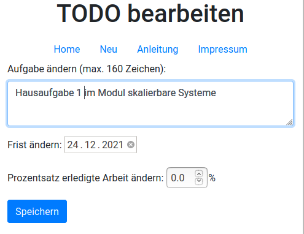

| 1. Klicken Sie auf der Startseite (ToDos) bei der Aufgabe, die sie ändern möchten, auf den entsprechenden grünen Button. Es erscheint die folgende Seite (siehe Bild):

|
| 2. Wenn Sie die Beschreibung der Aufgabe ändern möchten, klicken Sie in der Box mit der Beschreibung an der entsprechenden Stelle. Geben Sie Ihre Änderungen ein. |
| 3. Wenn Sie (auch) die Frist ändern möchten, klicken Sie in die entsprechende Box. Es erscheint ein Kalender. Wählen Sie die neue Frist aus. |
| 4. Wenn Sie (auch) den Prozentsatz für die Erledigung der Aufgabe ändern möchten, klicken Sie entweder auf die Pfeile der entsprechenden Box, bis der gewünschte Wert erreicht ist oder klicken Sie in die Box und geben Sie den neuen Wert direkt ein (eine Nachkommastelle möglich). |
| 5. Klicken Sie anschließend den Speichern-Button. |